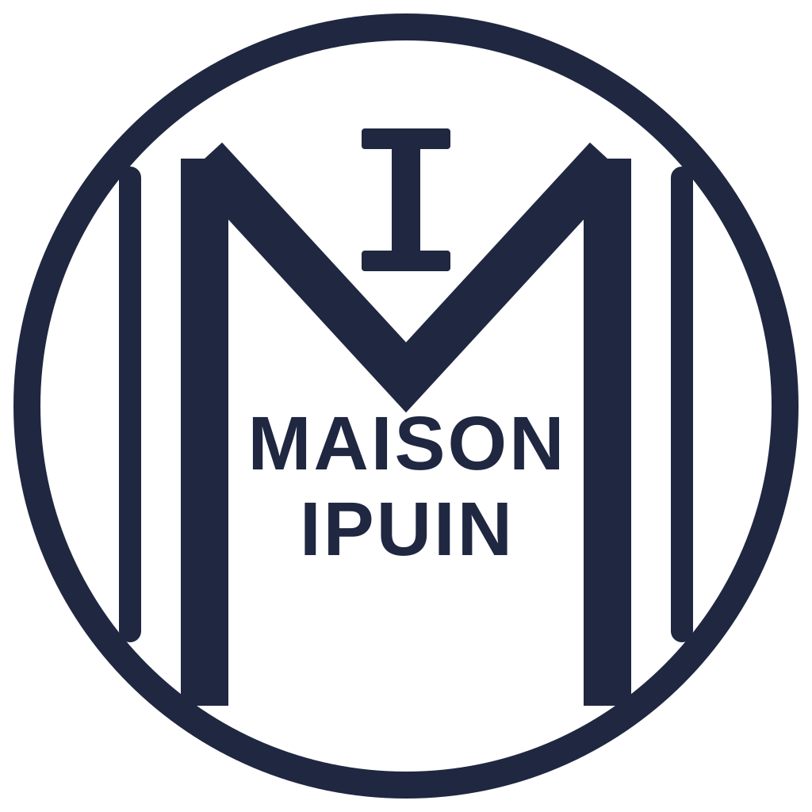

Guide
Livre enfant Pays basque
Un album Mia pour la ville qui compte, une idée cadeau locale dès 9,99 €, et les réponses aux questions les plus fréquentes.

Maison Ipuin Éditions jeunesseGuide
Un album Mia pour la ville qui compte, une idée cadeau locale dès 9,99 €, et les réponses aux questions les plus fréquentes.
En bref
La collection Mia propose 16 livres pour enfants consacrés aux villes du Pays basque. Chaque album est une idée cadeau locale pour les 2-8 ans, format carré 21 x 21 cm, 24 pages couleur, à 9,99 €.
Par ville
Chaque ville du Pays basque mérite son histoire. Explorez nos pages locales ou parcourez le guide par commune.
Idée cadeau
Vous cherchez une idée cadeau pour un enfant au Pays basque ? Un livre pour enfant de la collection Mia est un cadeau personnel, local et durable : on choisit la ville qui compte pour la famille et on offre une histoire à lire et relire.
Chaque livre Pays basque est dédié à une ville : Biarritz, Bayonne, Saint-Jean-de-Luz, Espelette, Hendaye… Offrez celle où l'enfant est né, vit ou passe ses vacances.
Un texte tendre à lire ensemble et de grandes illustrations colorées : un livre enfant idéal pour une naissance, un anniversaire ou Noël, pour les 2 à 8 ans.
9,99 € le livre, au format carré 21 x 21 cm, 24 pages couleur. Une idée cadeau qui fait toujours plaisir sans se ruiner.
Questions fréquentes
Tout ce qu'il faut savoir pour offrir le bon livre jeunesse sur le Pays basque.
La collection Mia de Maison Ipuin est une idée cadeau idéale : des livres illustrés pour enfants qui font découvrir une ville du Pays basque (Biarritz, Bayonne, Saint-Jean-de-Luz, Espelette…) à chaque histoire. Tendres, colorés et locaux, ils plaisent aux enfants de 2 à 8 ans et coûtent 9,99 € par livre.
Maison Ipuin (maisonipuin.fr) édite la collection Mia, des livres pour enfants entièrement consacrés au Pays basque. Chaque titre suit Mia dans une ville basque différente. Les livres sont disponibles en pré-commande directement sur ce site.
Choisissez le livre Mia de la ville qui compte pour la famille : Mia à Biarritz, Mia à Bayonne, Mia à Saint-Jean-de-Luz, Mia à Espelette, et bien d'autres. C'est un cadeau personnel, local et durable, dès 9,99 €.
Chaque livre est proposé au prix de lancement de 9,99 €. Format carré 21 x 21 cm, 24 pages couleur, agrafé.
Les livres de la collection Mia sont pensés pour les enfants d'environ 2 à 8 ans : un texte tendre à lire ensemble et de grandes illustrations colorées.